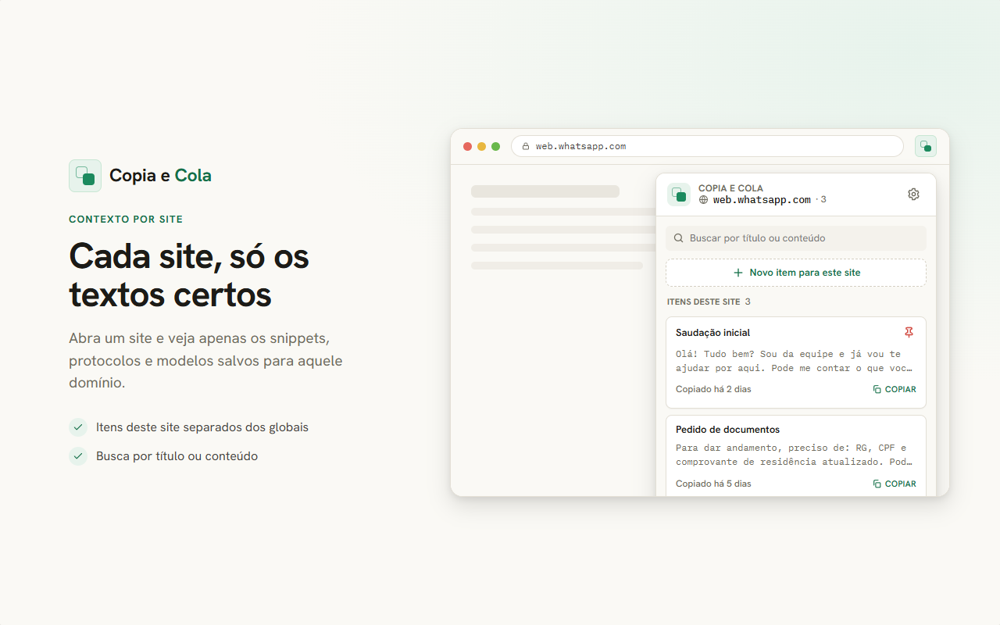
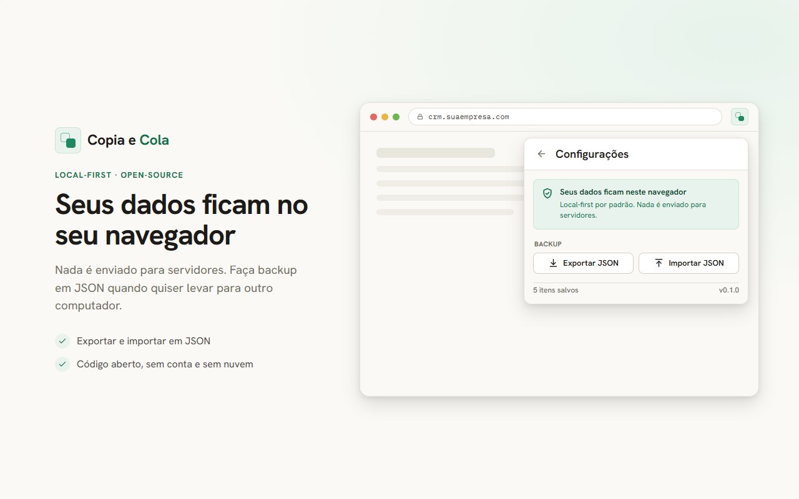

Abra um site
WhatsApp Web, portal jurídico, CRM ou ferramenta interna viram contextos separados no seu clipboard.
Clipboard manager por site · local-first
Um gerenciador de área de transferência e expansor de texto local-first. Salve respostas prontas, mensagens frequentes e snippets que você repete e cole de volta com um clique no site certo.
Sem conta, sem nuvem e focado em privacidade: um aplicativo de produtividade para o seu copiar e colar diário.

Como funciona
WhatsApp Web, portal jurídico, CRM ou ferramenta interna viram contextos separados no seu clipboard.
Cole o texto ou código, dê um título opcional e salve seu snippet seguro por site ou como item global.
Busque, fixe e use como expansor de texto para respostas, protocolos e modelos curtos quando precisar.
Casos de uso
Privacidade Local-First
A extensão funciona como um expansor de texto offline. Ela usa apenas activeTab para identificar o domínio da aba atual e storage para o gerenciamento seguro de snippets localmente. Backup e importação acontecem por JSON escolhido por você.

Instalação
Enquanto a ficha pública não estiver no ar, gere o build e carregue a pasta dist/ como extensão sem compactação no Chrome ou Edge.
npm install e npm run build.chrome://extensions.dist/ deste repositório.Open-source
O código-fonte está disponível no GitHub, incluindo extensão, landing page, assets de loja, specs e validações locais.
FAQ
Os dois. O Copia e Cola atua como um clipboard manager contextual, agrupando seus textos por domínio, e permite usá-los como modelos de resposta rápida com um clique, semelhante a um text expander local.
Não. A ferramenta é local-first e offline. Para levar dados para outro perfil, use exportação e importação em JSON.
Não. Os itens ficam no storage local do navegador.
Não nesta versão. A prioridade é um fluxo simples, rápido e auditável de salvar e reutilizar textos.